Social network structure
As we have seen in the previous chapter, sometimes more detailed modelling can lead to different results (compared to the abstract case) …….
Henrich’s model, for example, has shown that a populations ability to maintain and accumulate cultural traits depends on its size, whereby larger populations are more likely to retain and improve cultural traits than smaller ones. We used this model as an example that population-level characteristics (here, demography) play a role in cultural dynamics. Given that individuals acquire information from other individuals through social learning, we might also suspect that individual-level phenomena are important, too. Commonly, individual interactions are represented as networks, whereby nodes (also referred to as vertex, pl. vertices) represent individuals, and ties (also referred to as edges) between any two nodes indicate a relationship (e.g. friendship or kinship, or willingness to cooperate, etc.). Note, as with the term individual-based models, the individual can be a person but it can also represent a country, an institution, or any other kind of actor.
In this chapter, we will cover the basics of social networks, how to create, analyse, and use them. Finally, we will use all of that to find an answer to the question: how do individual-level interaction patterns affect population-level cultural dynamics?
The Basics
Let us start with a small group of colleagues who see each other on a regular base in the office, some are friends, and some are not (sometimes the friendships might not even be reciprocal). For this example, we use gossip as socially transmitted information. Say, we want to better understand how gossip is spreading through this group. At the simplest level, we might assume that: any two colleagues will exchange gossip whenever they meet. This would reduce the group of colleagues to a well-mixed population, where information can flow freely. However, assume that gossip is only transmitted if two friends interact. Now we have a situation, where information flow is constrained by the underlying friendship network. To explore, how information can spread in that friendship network, we first need to find a way to represent it in R. One way to represent networks is an adjacency matrix. It is a square matrix where all individuals of a population are represented as columns and rows.
m <- matrix(c(0,1,1, 0,0,1, 1,1,0), nrow=3, byrow=T)
row.names(m) <- c("A","B","C")
colnames(m) <- c("A","B","C")
m
## A B C
## A 0 1 1
## B 0 0 1
## C 1 1 0
The matrix above is an example of such an adjacency matrix. Shown are the relationships between three individuals (A, B, and C). When we look at the first row, we see that A has no interaction with itself (indicated by the zero), but interacts both with B and C (indicated by the ones). From the next row, we see that B is only interacting with C, and the last row tells us that C interacting both with A and with B. This is an example for an asymmetric adjacency matrix because not all interactions are reciprocal (A is interacting with B but B is not interacting with A). We can test this by comparing the upper triangle of the matrix with the lower triangle of the matrix:
all(m[upper.tri(m)] == m[lower.tri(m)])
## [1] FALSE
We can make this matrix symmetric by replacing the lower matrix triangle with the upper one (this requires us to first transpose the triangle using the t() function):
# Either
m[lower.tri(m)] <- t(m)[lower.tri(m)]
# or use m[2,1] <- 1
m
## A B C
## A 0 1 1
## B 1 0 1
## C 1 1 0
# Check whether the matrix is symmetric now:
all(m[upper.tri(m)] == m[lower.tri(m)])
## [1] TRUE
Now let us turn back to our group of co-workers, and let us create a random friendship network. We start with an empty adjacency matrix, add friendships to the upper triangle and then copy the mirror image to the lower triangle (this is assuming that friendships are reciprocal):
n <- 10
adjm <- matrix(NA, ncol=n, nrow=n)
adjm
## [,1] [,2] [,3] [,4] [,5] [,6] [,7] [,8] [,9] [,10]
## [1,] NA NA NA NA NA NA NA NA NA NA
## [2,] NA NA NA NA NA NA NA NA NA NA
## [3,] NA NA NA NA NA NA NA NA NA NA
## [4,] NA NA NA NA NA NA NA NA NA NA
## [5,] NA NA NA NA NA NA NA NA NA NA
## [6,] NA NA NA NA NA NA NA NA NA NA
## [7,] NA NA NA NA NA NA NA NA NA NA
## [8,] NA NA NA NA NA NA NA NA NA NA
## [9,] NA NA NA NA NA NA NA NA NA NA
## [10,] NA NA NA NA NA NA NA NA NA NA
Now, we randomly assign friendships to one of the triangles. We sample from zeros (no friends) and ones (friends) with a probability that indicates how many friendships there are in the network (friendschipRatio):
friendshipRatio <- 0.5
adjm[upper.tri(adjm)] <- sample(x = 0:1,
size = n*(n-1)/2,
replace = T,
prob = c(1-friendshipRatio, friendshipRatio))
adjm
## [,1] [,2] [,3] [,4] [,5] [,6] [,7] [,8] [,9] [,10]
## [1,] NA 1 0 0 0 0 1 0 0 0
## [2,] NA NA 1 0 0 0 1 1 0 0
## [3,] NA NA NA 1 0 1 1 0 0 0
## [4,] NA NA NA NA 0 0 0 0 0 1
## [5,] NA NA NA NA NA 0 1 0 0 1
## [6,] NA NA NA NA NA NA 1 0 0 1
## [7,] NA NA NA NA NA NA NA 0 1 0
## [8,] NA NA NA NA NA NA NA NA 0 1
## [9,] NA NA NA NA NA NA NA NA NA 1
## [10,] NA NA NA NA NA NA NA NA NA NA
# add the mirror image to the lower triangle
adjm[lower.tri(adjm)] <- t(adjm)[lower.tri(adjm)]
adjm
## [,1] [,2] [,3] [,4] [,5] [,6] [,7] [,8] [,9] [,10]
## [1,] NA 1 0 0 0 0 1 0 0 0
## [2,] 1 NA 1 0 0 0 1 1 0 0
## [3,] 0 1 NA 1 0 1 1 0 0 0
## [4,] 0 0 1 NA 0 0 0 0 0 1
## [5,] 0 0 0 0 NA 0 1 0 0 1
## [6,] 0 0 1 0 0 NA 1 0 0 1
## [7,] 1 1 1 0 1 1 NA 0 1 0
## [8,] 0 1 0 0 0 0 0 NA 0 1
## [9,] 0 0 0 0 0 0 1 0 NA 1
## [10,] 0 0 0 1 1 1 0 1 1 NA
# replace diagonal (these indicate self-references) with zeros
diag(adjm) <- 0
adjm
## [,1] [,2] [,3] [,4] [,5] [,6] [,7] [,8] [,9] [,10]
## [1,] 0 1 0 0 0 0 1 0 0 0
## [2,] 1 0 1 0 0 0 1 1 0 0
## [3,] 0 1 0 1 0 1 1 0 0 0
## [4,] 0 0 1 0 0 0 0 0 0 1
## [5,] 0 0 0 0 0 0 1 0 0 1
## [6,] 0 0 1 0 0 0 1 0 0 1
## [7,] 1 1 1 0 1 1 0 0 1 0
## [8,] 0 1 0 0 0 0 0 0 0 1
## [9,] 0 0 0 0 0 0 1 0 0 1
## [10,] 0 0 0 1 1 1 0 1 1 0
This is all we need to describe the interactions and the flow of information within this group. And while we could already use other tools in R to analyse it, we should first try to visualise this network to get a better intuition of what this group looks like. The igraph package provides many incredibly useful functions and tools to create, work with, and analyse networks. We will rely on many of its functions in this chapter.
Plotting networks
Given that we already have an adjacency matrix, we can create a network using the graph_from_adjacency_matrix() function.
## Warning: package 'igraph' was built under R version 4.0.2
##
## Attaching package: 'igraph'
## The following objects are masked from 'package:dplyr':
##
## as_data_frame, groups, union
## The following objects are masked from 'package:purrr':
##
## compose, simplify
## The following object is masked from 'package:tidyr':
##
## crossing
## The following object is masked from 'package:tibble':
##
## as_data_frame
## The following objects are masked from 'package:stats':
##
## decompose, spectrum
## The following object is masked from 'package:base':
##
## union
net <- graph_from_adjacency_matrix(adjm)
net
## IGRAPH ce7c001 D--- 10 32 --
## + edges from ce7c001:
## [1] 1-> 2 1-> 7 2-> 1 2-> 3 2-> 7 2-> 8 3-> 2 3-> 4 3-> 6 3-> 7
## [11] 4-> 3 4->10 5-> 7 5->10 6-> 3 6-> 7 6->10 7-> 1 7-> 2 7-> 3
## [21] 7-> 5 7-> 6 7-> 9 8-> 2 8->10 9-> 7 9->10 10-> 4 10-> 5 10-> 6
## [31] 10-> 8 10-> 9
When we return the net object, we receive a lot of information about our network, for example, that it is there are 10 vertices and 32 edges (for more information be sure to have a look at this short igraph introduction). However, we did not receive an actual network figure. For this, we can use the R’s generic plot function:

This is the most basic network plot where each node (with the numbers 1 to 10) and their connections (edges/ties) are plotted such that nodes that receive more connections are more central and those that rec#eive less are more peripheral. Note, every time you plot the network, it will have a slightly different layout. If you would like to preserve the node positions you can uncomment the set.seed() function in the code chunk above.
There are many ways to change the looks of network plots. The igraph manual is an ideal starting point to learn more about it. For example, we could plot nodes based on specific layout functions:
par(mfrow=c(1,2))
plot(net, layout=layout.grid(net), main="Grid layout")
plot(net, layout=layout.circle(net), main="Ring layout")

Or we can directly change the size, and colour of nodes:
par(mfrow=c(1,1))
plot(net,
vertex.color="dodgerblue",
vertex.label.color="white",
vertex.size=20,
edge.color="black",
edge.width=1,
edge.arrow.size=0.5,
main="Default layout with styling")
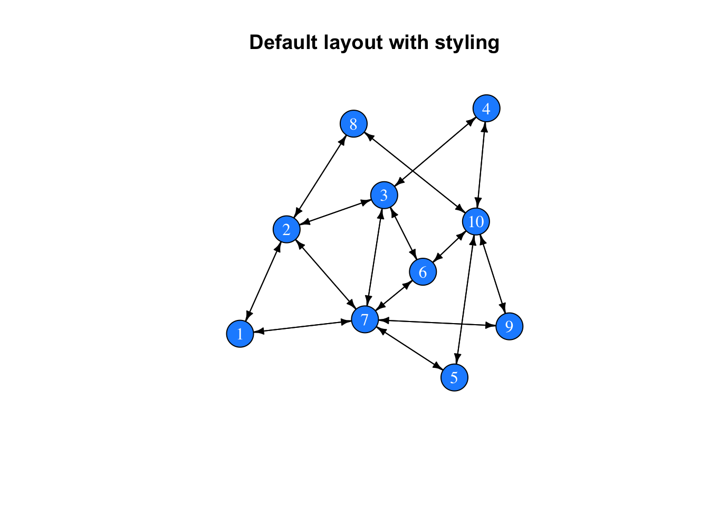
In the previous example, we have changed the colour of the nodes’ background and text, and their overall size (attributes starting with vertex.). We have also changed the colour of the edges, their width, and the size of the tips (attributes starting with edge.).
Let’s say, we know the age of each individual and we would like to visualise age as different colours of the nodes. For that, we should first store the colour information for each vertex (using the V() function) and then change the vertex colour in the plot function:
# There is no age attribute set
V(net)$age
## NULL
# Add an age attribute and randomly assign an age class
V(net)$age <- sample(x=1:10, size=n, replace=T)
# The network now has an age attribute
V(net)$age
## [1] 8 7 7 2 9 8 2 10 6 1
V(net)$colour <- heat.colors(n=10)[V(net)$age]
net
## IGRAPH ce7c001 D--- 10 32 --
## + attr: age (v/n), colour (v/c)
## + edges from ce7c001:
## [1] 1-> 2 1-> 7 2-> 1 2-> 3 2-> 7 2-> 8 3-> 2 3-> 4 3-> 6 3-> 7
## [11] 4-> 3 4->10 5-> 7 5->10 6-> 3 6-> 7 6->10 7-> 1 7-> 2 7-> 3
## [21] 7-> 5 7-> 6 7-> 9 8-> 2 8->10 9-> 7 9->10 10-> 4 10-> 5 10-> 6
## [31] 10-> 8 10-> 9
The net object now has two attributes (one is called age, with numeric values, and one is called colour, with character values). We can now plot this graph:
plot(net,
vertex.color=V(net)$colour,
vertex.label.color="black",
vertex.size=20,
edge.color="black",
edge.width=1,
edge.arrow.size=0.5)
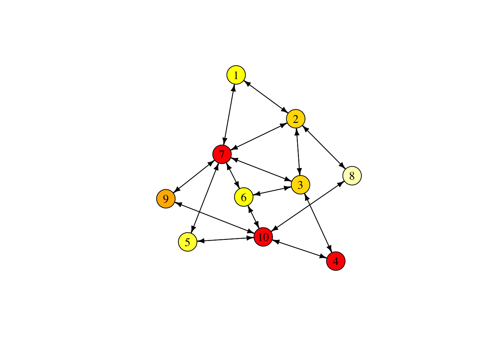
It can be useful to remove the labels from the nodes and reduce the node size, especially when the networks become large. Also, given that we have a symmetric network (all relationships are reciprocal), we can get rid of the arrow tips. We do this by telling igraph that the network is undirected.
net <- as.undirected(net)
plot(net,
vertex.color=V(net)$colour,
vertex.label="",
vertex.size=9,
edge.width=1,
edge.arrow.size=0.5)

One final styling example. So far, we have the edges indicate the existence of friendship relationships, which is a binary quality. However, we can also imagine friendship as a continuous variable (from strong = 1 to none = 0). Using the edge function E(), we can add attributes to the edges in the network. We can use those to alter the width of edges depending on their relationship strength. To do that, we will first change the adjacency matrix (from binary to continuous values) and then plot the new network.
# create a copy of the adjacency matrix
adjm2 <- adjm
# draw random values from a uniform distribution and replace the matrix entries that have a value of 1
adjm2[upper.tri(adjm2)] <- runif(n=sum(upper.tri(adjm2))) * adjm2[upper.tri(adjm2)]
# copy the mirror image to the lower triangle
adjm2[lower.tri(adjm2)] <- t(adjm2)[lower.tri(adjm2)]
# create the network
net2 <- graph_from_adjacency_matrix(adjm2, weighted=TRUE, mode="undirected")
net2
## IGRAPH 4df4e41 U-W- 10 16 --
## + attr: weight (e/n)
## + edges from 4df4e41:
## [1] 1-- 2 1-- 7 2-- 3 2-- 7 2-- 8 3-- 4 3-- 6 3-- 7 4--10 5-- 7 5--10 6-- 7
## [13] 6--10 7-- 9 8--10 9--10
Note, igraph automatically added an attribute called weight. Now, let’s plot this network with the edge width representing their weight:
V(net2)$age <- V(net)$age
V(net2)$colour <- V(net)$colour
plot(net2,
vertex.color=V(net2)$colour,
vertex.label="",
vertex.size=9,
edge.width=E(net2)$weight*5,
edge.arrow.size=0.5)

You can now observe strong and weak relationships between individuals, their location relative to each other, and how they cluster. In the next section, we will try to quantify these observations.
Analyse social networks
There is a variety of measures to describe the structure of our graph (another term for network). We can generally differentiate between properties of the network and properties of the vertices:
Network properties
We can retrieve the most basic information about our network using:
# vertex information
V(net)
## + 10/10 vertices, from 9a88e59:
## [1] 1 2 3 4 5 6 7 8 9 10
# edge information
E(net)
## + 16/16 edges from 9a88e59:
## [1] 1-- 2 2-- 3 3-- 4 3-- 6 1-- 7 2-- 7 3-- 7 5-- 7 6-- 7 2-- 8 7-- 9 4--10
## [13] 5--10 6--10 8--10 9--10
If our networks have attributes stored (for the vertices or edges), we can retrieve them with the following two functions:
# vertex attributes
get.vertex.attribute(graph=net)
## $age
## [1] 8 7 7 2 9 8 2 10 6 1
##
## $colour
## [1] "#FFFF00" "#FFDB00" "#FFDB00" "#FF2400" "#FFFF40" "#FFFF00" "#FF2400"
## [8] "#FFFFBF" "#FFB600" "#FF0000"
# edge attributes
get.edge.attribute(net)
## named list()
With vcount() and ecount(), we can return the number of vertices (10) and edges (16) in our graph.
# vertex count
vcount(net)
## [1] 10
## [1] 16
Let us now look at a variety of measures that we can calculate to characterise our network.
Diameter is a measure for the longest (geodesic) path, i.e. the largest number of steps that are necessary to reach two vertices in a network (using farthest_vertices() we can return the ID of the two vertices).
## [1] 3
Average path length is the average number of steps that need to be traversed between any two vertices (aka as dyad). We can also use the distance() function to return a distance matrix similar to the adjacency matrix.
# average distance between any dyad
mean_distance(graph=net)
## [1] 1.688889
Edge density is the proportion of edges present in the graph relative to the number of possible edges (i.e. in a fully connected network with the same number of nodes).
## [1] 0.3555556
Reciprocity (relevant for directed graphs only) calculates the proportion of mutual edges. As we have a directed graph, this value is one.
## [1] 1
Clustering coefficient (aka transitivity, or cliquishness) is the probability that the two neighbours of a vertex are neighbours of each other. This is also called a triangle, and often the image of ‘my friends are friends with each other’ is used.
## [1] 0.2
Vertex properties
Additional to these high-level measures, we can use a series of node-level measures to describe connectivity in more detail:
Degree centrality refers to the number of (incoming/outgoing/both) edges of a vertex. We can use the degree() function to determine the degree centrality of each node:
# number of edges that connected with each node
degree(graph=net)
## [1] 2 4 4 2 2 3 6 2 2 5
# as we have an undirected network, the count of incoming and outgoing edges is identical
identical(degree(graph=net, mode="in"),
degree(graph=net, mode="out"))
## [1] TRUE
# we can use the mean of all degree centralities as a general measure for the entire network
mean(degree(graph=net))
## [1] 3.2
Strength is similar to degree centrality but relevant for weighted networks. It is the sum of all adjacent edge weights (a node might have many edges but with very low weights and so with high degree centrality but low strength). In our case (unweighted network), degree() and strength() produce the same result:
sort(strength(graph=net))
## [1] 2 2 2 2 2 3 4 4 5 6
Closeness centrality represents the number of steps it takes from a given vertex to any other vertex in the network. It is a measure for how long information on average takes to arrive at this node.
## [1] 0.05555556 0.07142857 0.07142857 0.05882353 0.06250000 0.06666667
## [7] 0.08333333 0.06250000 0.06250000 0.07142857
Note that the values are $<$1. This is because igraph defines closeness centrality as ‘the inverse of the average length of the shortest paths to/from all the other vertices in the graph.’
Betweenness centrality is the number of shortest paths between nodes that pass through a particular node. It is often seen as a measure for a node’s gatekeeping or brokerage potential:
## [1] 0.0000000 4.2500000 4.0000000 0.5000000 0.5833333 1.0833333
## [7] 10.7500000 1.2500000 0.5833333 8.0000000
Eigenvector centrality is the eigenvector of the adjacency matrix. Vertices with a high eigenvector centrality are connected to many individuals who are connected to many individuals, and so on (see also page rank, page_rank(), and authority, authority_score(), score functions).
eigen_centrality(graph=net)$vector
## [1] 0.4819241 0.7362282 0.7817756 0.4013528 0.4619252 0.6789223 1.0000000
## [8] 0.3887102 0.4619252 0.6641784
Using social networks to model information transmission
Now that we know how to generate, plot, and analyse networks: how can we use them in the context of information sharing. Or to come back to our initial example, the spread of gossip? Let us start with a very simple model: we initiate the simulation be endowing one individual with a piece of information (or gossip). We then simulate how many time steps it will take until the information has spread through the entire network.
Gossip transmission on networked populations
# set up vector that stores whether an individual possesses the latest gossip:
gossip_meter <- rep(F, n)
gossip_meter
## [1] FALSE FALSE FALSE FALSE FALSE FALSE FALSE FALSE FALSE FALSE
# choose a random individual to start gossipping
gossip_meter[sample(x=n, size=1)] <- T
gossip_meter
## [1] TRUE FALSE FALSE FALSE FALSE FALSE FALSE FALSE FALSE FALSE
# choose an individual with gossip
if(sum(gossip_meter)==1){
gossip_provider <- which(gossip_meter)
} else {
gossip_provider <- sample(x=which(gossip_meter), size=1)
}
# choose a neighbour in the network
neighbours <- which(adjm[gossip_provider,]==1)
# only execute if there is a neighbour
if(length(neighbours)>0){
# choose one neighbour if several are present
if(length(neighbours)==1){
neighbour <- neighbours
} else {
neighbour <- sample(x=neighbours, size=1)
}
# update gossip indicator of the neighbour
gossip_meter[neighbour] <- T
}
gossip_meter
## [1] TRUE TRUE FALSE FALSE FALSE FALSE FALSE FALSE FALSE FALSE
This is already sufficient to simulate the spread of gossip on a network. In the next step, let us loop over these instructions and record the number of time steps it takes until everyone received the gossip. But first, we should write a different sample() function, as the generic function misbehaves with samples of length equal to one. We will use the following:
mySample <- function(x, prob=NULL){
if(length(x)==1){
return(x)
} else {
return(sample(x=x, size=1, prob=prob))
}
}
Now we can use this simpler version of the sampling function (which is directly tailored to our needs), replace it in the code above, and add a for loop:
# total number of turns to loop over
Turns <- 50
# a matrix to record how many individuals have the gossip at time x
res <- data.frame(turn=1:Turns, gossipers=rep(0, Turns))
# set up gossip indicator
gossip_meter <- rep(F, n)
# choose a random individual to start gossipping
gossip_meter[sample(x=n, size=1)] <- T
for(turns in 1:Turns){
res[turns,2] <- sum(gossip_meter)/n
# choose an individual with gossip
gossip_provider <- mySample(which(gossip_meter))
# choose a neighbour in the network
neighbours <- which(adjm[gossip_provider,]==1)
# only execute if there is a neighbour
if(length(neighbours)>0){
# choose one neighbour ...
neighbour <- mySample(neighbours)
# and update its gossip indicator
gossip_meter[neighbour] <- T
}
}
# have a look at the time course
res$turn
## [1] 1 2 3 4 5 6 7 8 9 10 11 12 13 14 15 16 17 18 19 20 21 22 23 24 25
## [26] 26 27 28 29 30 31 32 33 34 35 36 37 38 39 40 41 42 43 44 45 46 47 48 49 50
# plot result
library(ggplot2)
ggplot(res) +
geom_line(aes(x=turn, y=gossipers)) +
theme_bw()

Let us adapt the code so that we can run it repeatedly, to get a better feeling for the average amount of time it takes for the information to spread.
gossip_model <- function(ADJM, TURNS, SIM=1){
n <- nrow(ADJM)
# a matrix to record how many individuals have the gossip at time x
res <- data.frame(turn=1:TURNS, gossipers=rep(0, TURNS))
# set up gossip indicator
gossip_meter <- rep(F, n)
# choose a random individual to start gossipping
gossip_meter[sample(x=n, size=1)] <- T
for(turns in 1:TURNS){
res[turns,2] <- sum(gossip_meter)/n
# choose an individual with gossip
gossip_provider <- mySample(which(gossip_meter))
# choose a neighbour in the network
neighbours <- which(ADJM[gossip_provider,]==1)
# only execute if there is a neighbour
if(length(neighbours)>0){
# choose one neighbour ...
neighbour <- mySample(neighbours)
# and update its gossip indicator
gossip_meter[neighbour] <- T
}
}
res$simulation <- SIM
return(res)
}
With this function of our model, we can easily re-run the simulation several times and receive the time trajectories for each simulation:
data <- do.call("rbind", lapply(1:100, function(sim){
gossip_model(ADJM=adjm, TURNS=100, SIM=sim)
}))
ggplot(data) +
geom_line(aes(x=turn, y=gossipers, group=simulation), alpha=.2) +
theme_bw()

We can see that the initial spread is very fast and then tapers off. At the beginning there are a lot of individuals who do not have the gossip and transmission will be successful. However, the more individuals with the gossip there are, the less likely it is to find someone who does not yet have the gossip. How does this result compare to simulations with a fully connected network (i.e. where every individual is equally likely to interact with any other individual)?
To make the creation of networks easier, let us write down a function to generate networks as we have done before:
createNetwork <- function(N, FRIENDSHIPRATIO){
adjm <- matrix(0, ncol=N, nrow=N)
adjm[upper.tri(adjm)] <- sample(x = 0:1,
size = N*(N-1)/2,
replace = T,
prob = c(1-FRIENDSHIPRATIO, FRIENDSHIPRATIO))
adjm[lower.tri(adjm)] <- t(adjm)[lower.tri(adjm)]
return(adjm)
}
Now we can create a fully connected network, run the gossip model on it, and plot the results:
adjm_full <- createNetwork(N=n, FRIENDSHIPRATIO=1)
data_full <- do.call("rbind",
lapply(1:100, function(sim){
gossip_model(ADJM=adjm_full, TURNS=100, SIM=sim)
}
)
)
data$type <- "colleague network"
data_full$type <- "fully connected"
data_combined <- rbind(data, data_full)
ggplot(data_combined) +
geom_point(aes(x=turn, y=gossipers, color=type), alpha=.05) +
geom_smooth(aes(x=turn, y=gossipers, color=type)) +
ylab("Proportion with gossip") +
theme_bw()
## `geom_smooth()` using method = 'gam' and formula 'y ~ s(x, bs = "cs")'

This plot shows that the fully connected network reaches saturation faster than the colleague network. The difference becomes even more obvious when we re-run this simulation with larger networks:
adjm_colleagues <- createNetwork(N=25, FRIENDSHIPRATIO=.20)
adjm_full <- createNetwork(N=25, FRIENDSHIPRATIO=1)
data_colleagues <- do.call("rbind", lapply(1:100, function(sim){
gossip_model(ADJM=adjm_colleagues, TURNS=100, SIM=sim)
}))
data_full <- do.call("rbind", lapply(1:100, function(sim){
gossip_model(ADJM=adjm_full, TURNS=100, SIM=sim)
}))
data_colleagues$type <- "colleague network"
data_full$type <- "fully connected"
data_combined2 <- rbind(data_full, data_colleagues)
ggplot(data_combined2) +
geom_point(aes(x=turn, y=gossipers, color=type), alpha=.05) +
geom_smooth(aes(x=turn, y=gossipers, color=type)) +
ylab("Proportion with gossip") +
theme_bw()
## `geom_smooth()` using method = 'gam' and formula 'y ~ s(x, bs = "cs")'
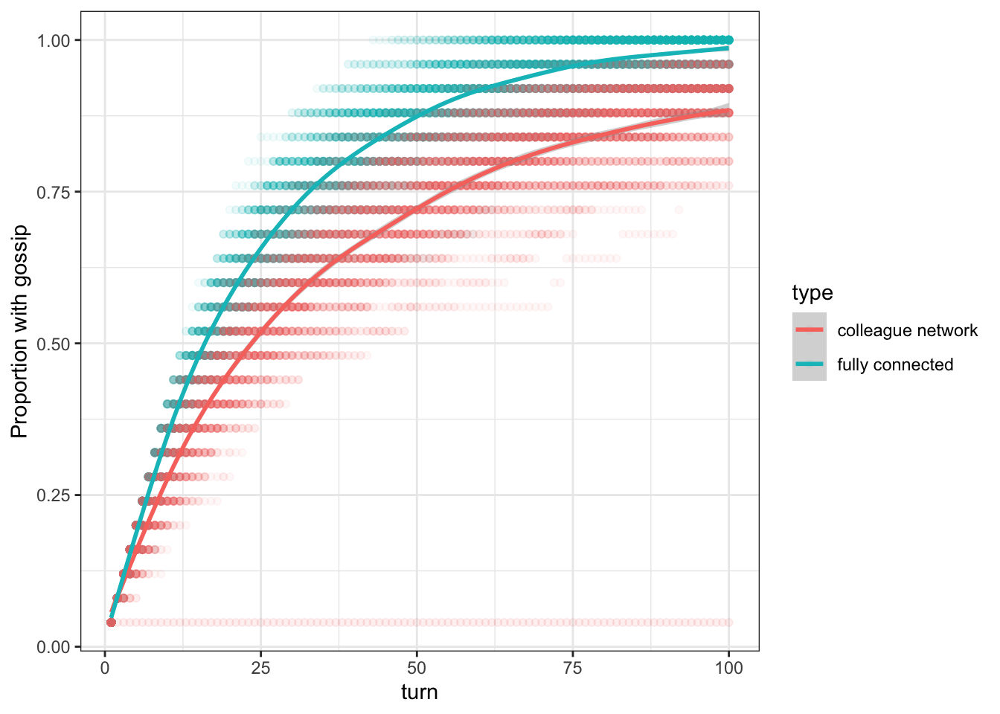
How does network structure affect information transmission?
While the previous example has shown us the difference in the transmission speed of information in a structured versus an unstructured population (i.e. the fully connected network which is equivalent to a well-mixed population), we still do not know how network characteristics affect the transmission of information. To get a better understanding of it, we will simulate the transmission of information in networks of different sizes and connectivity. Here, we will simulate Small-World networks (also known as Watts-Strogatz graphs). These are networks that are characterised by high clustering and short average path length.
For this type of analysis we do not need to record each time step, instead, we can let our function return the time step at which, e.g. 75% of the population have heard the gossip:
gossip_model <- function(ADJM, PROP, TURNS, SIM=1){
n <- nrow(ADJM)
# set up gossip indicator
gossip_meter <- rep(F, n)
# choose a random individual to start gossipping
gossip_meter[sample(x=n, size=1)] <- T
timestep <- NA
for(turns in 1:TURNS){
# record the time step when a defined proportion of the population has the gossip
if(sum(gossip_meter)/n >= PROP & is.na(timestep)){
timestep <- turns
}
# choose an individual with gossip
gossip_provider <- mySample(which(gossip_meter))
# choose a neighbour in the network
neighbours <- which(ADJM[gossip_provider,]==1)
# only execute if there is a neighbour
if(length(neighbours)>0){
# choose one neighbour ...
neighbour <- mySample(neighbours)
# and update its gossip indicator
gossip_meter[neighbour] <- T
}
}
# if PROP is not reached, return the maximum value
if(is.na(timestep)){
timestep <- TURNS
}
return(timestep)
}
adjm <- createNetwork(N=50, FRIENDSHIPRATIO=.25)
gossip_model(ADJM=adjm, PROP=.75, TURNS=100, SIM=1)
## [1] 100
Now, let us run these functions for different group sizes and different connectivites, and let us repeat these simulations several times to get a better estimate:
parameters <- expand.grid(groupSize=c(10,50),#c(10,30,50,70,90),
reconnections=c(0,.01,.05,.1,.5,1),
repetition=1:50)
tmp <- lapply(1:nrow(parameters), function(p){
net <- watts.strogatz.game(dim=1, size=parameters[p,"groupSize"], nei=2, p=parameters[p,"reconnections"], loops=F, multiple=F)
adjm <- get.adjacency(net)
model <- gossip_model(ADJM=adjm, PROP=.5, TURNS=500, SIM=parameters[p,"repetition"])
data.frame(time=model,
degree=mean(degree(net)),
path=average.path.length(net))
})
tmp2 <- do.call("rbind", tmp)
parameters <- cbind(parameters, tmp2)
To plot the average time of our repeated simulations, we need to first calculate this average:
library(dplyr)
parameters %>% group_by(groupSize, reconnections) %>% summarise(meanTime=mean(time),
meanDegree=mean(degree),
meanPath=mean(path)) -> data
## `summarise()` regrouping output by 'groupSize' (override with `.groups` argument)
Let us have a look at both the average network degree and the average path length of the networks:
parameters$groupSize <- factor(parameters$groupSize)
ggplot(parameters, aes(x=reconnections, y=degree, col=groupSize)) +
geom_point() +
xlab("Prob. of reconnection") +
ylab("Average Degree") +
theme_bw()

Note, the average network degree is constant at \(k =\) 4. This is due to the way Small World networks are created. We start with a regular lattice network and then randomly select an edge and change the vertex on one end (e.g. from A–B to A–C). Thus, while some individuals might now have fewer (or even zero) edges and others might have more, the average number of edges and so the average degree remains fixed an independent of the number of rewired edges.
ggplot(parameters, aes(x=reconnections, y=path, col=groupSize)) +
geom_point() +
xlab("Prob. of reconnection") +
ylab("Average path length") +
theme_bw()
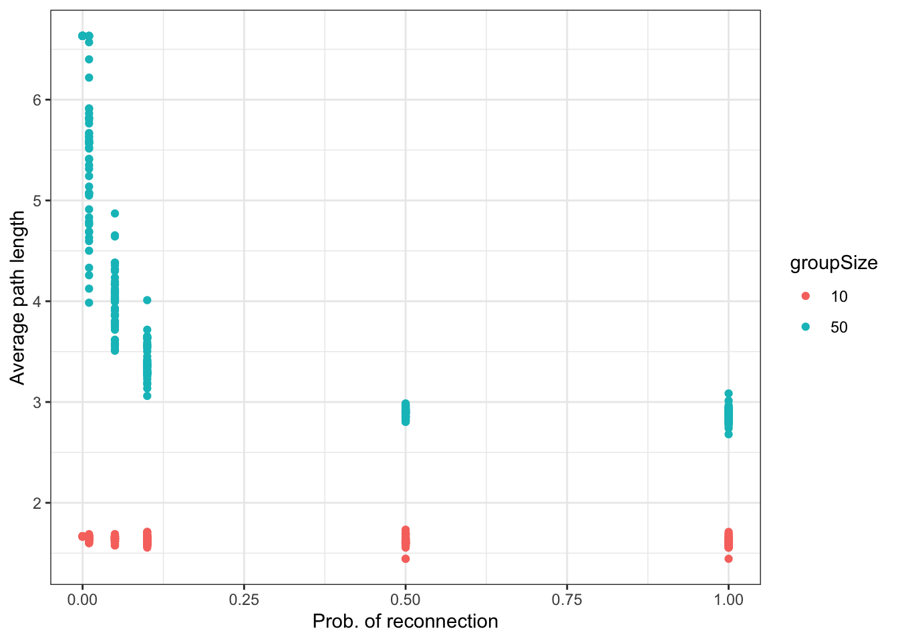
This, however, is not true for the path length. Instead, we find that larger networks (with otherwise the same network parameters) have longer average path lengths (i.e. it takes on average more steps to get from one to another individual). Also, as we increase the probability to reconnect edges average path length goes down. This is because random connections might connect distant sections of the network and so drastically lower the number of steps required to get from one individual to another.
ggplot(parameters, aes(x=path, y=time, col=groupSize)) +
geom_point(alpha=.33) +
xlab("Average path length") +
ylab("Time") +
theme_bw()
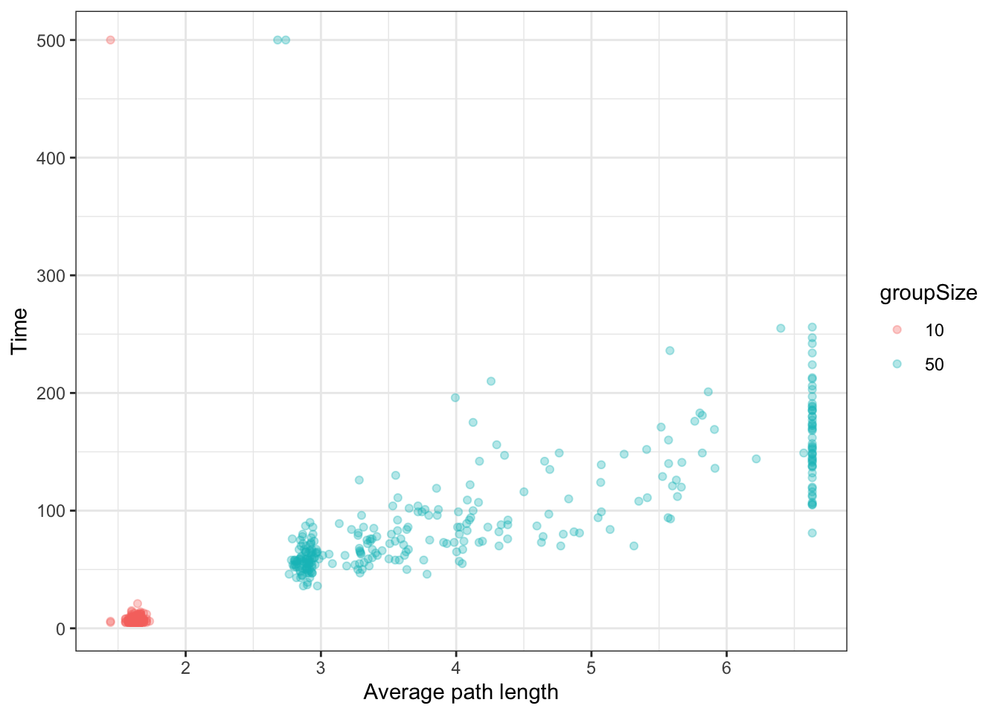
From this graph, we can see that the spread of information decreases as networks become larger and as average path length increases.
Complex versus simple contagion
The spread of information is not only affected by the network shape but also by the manner of information transmission. That is, often information is not simply transmitted from one individual to another in a simple contagion like manner but instead requires increased social facilitation. This can both be repeated exposure to the information or a certain proportion of social partners who possess this information. In other words, often we are more likely to acquire behaviours from others if this behaviour is more frequent in our neighbourhood. This kind of transmission is called complex contagion (see e.g. Centola (2010)). But how does simple and complex contagion affect the spread of information? To model this, we can write a small model where we randomly select individuals and check whether they acquire information from their social contacts based on a threshold value, i.e. the number of contacts required to acquire information.
Let us start with a model of simple contagoin (requires only one social contact that possesses a new beahviour or information to acquire it):
informationSpread <- function(ADJM, MODE="simple", ROUNDS=100, CONTACTS=1){
N <- nrow(ADJM)
# set up behaviour
behaviour <- rep(F, N)
behaviour[sample(N,size=10)] <- T
# recording data
fraction <- rep(0, ROUNDS)
# loop
for(round in 1:ROUNDS){
# record
fraction[round] <- sum(behaviour)/N
# pick random individual
focal <- sample(x=N, size=1)
# who are its neighbours
neigh <- adjm[focal, ] == 1
if(sum(behaviour[neigh]) >= CONTACTS){
behaviour[focal] <- T
}
}
return(data.frame(mode=MODE, frac=fraction, round=1:ROUNDS))
}
# Simulations with clustered (lattice) networks
net <- watts.strogatz.game(size=10, dim=2, nei=2, p=.1)
adjm <- as.matrix(get.adjacency(net))
clu <- informationSpread(ADJM=adjm, MODE="simple", ROUNDS=1000, CONTACTS=1)
clu$network <- "clustered"
# Simulations with random (small world) networks
net2 <- erdos.renyi.game(n=100, p.or.m=600, type="gnm", directed=F, loops=F)
adjm2 <- as.matrix(get.adjacency(net2))
rand <- informationSpread(ADJM=adjm2, MODE="simple", ROUNDS=1000, CONTACTS=1)
rand$network <- "random"
res <- rbind(clu, rand)
ggplot(res) + geom_line(aes(x=round, y=frac, col=network, linetype=mode), size=.9)
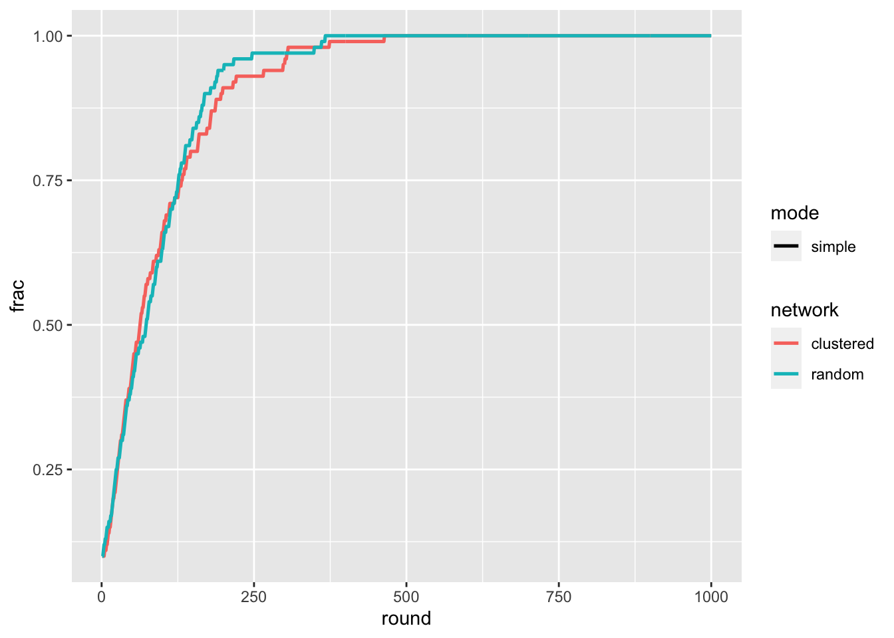
For the simple contagion case we find very little differnce between the two network types. Let us now add the complex contagon case to the simulation:
# for repeated interactions
informationSpread <- function(NET, MODE="simple", ROUNDS=100, CONTACTS=1){
if(NET=="clustered"){
net <- watts.strogatz.game(size=10, dim=2, nei=2, p=.1, loops=F, multiple=F)
} else if(NET=="random"){
net <- erdos.renyi.game(n=100, p.or.m=600, type="gnm", directed=F, loops=F)
}
adjm <- as.matrix(get.adjacency(net))
N <- nrow(adjm)
# set up behaviour
behaviour <- rep(F, N)
behaviour[sample(N,size=10)] <- T
# recording data
fraction <- rep(0, ROUNDS)
# loop
for(round in 1:ROUNDS){
# record
fraction[round] <- sum(behaviour)/N
# pick random individual
focal <- sample(x=N, size=1)
# who are its neighbours
neigh <- adjm[focal, ] == 1
if(sum(behaviour[neigh]) >= CONTACTS){
behaviour[focal] <- T
}
}
return(data.frame(network=NET, mode=MODE, frac=fraction, round=1:ROUNDS))
}
# repeated runs
reps <- 10
# simulte complex and simple contagion for clustered networks
set.seed(1110)
clu_simple <- do.call("rbind", lapply(1:reps, function(x) informationSpread(NET="clustered", ROUNDS=1000, CONTACTS=1, MODE="simple")))
clu_comp <- do.call("rbind", lapply(1:reps, function(x) informationSpread(NET="clustered", ROUNDS=1000, CONTACTS=4, MODE="complex")))
clu <- rbind(clu_simple, clu_comp)
# simulte complex and simple contagion for random networks
rand_simple <- do.call("rbind", lapply(1:reps, function(x) informationSpread(NET="random", ROUNDS=1000, CONTACTS=1, MODE="simple")))
rand_comp <- do.call("rbind", lapply(1:reps, function(x) informationSpread(NET="random", ROUNDS=1000, CONTACTS=4, MODE="complex")))
rand <- rbind(rand_simple, rand_comp)
# combine results
res <- rbind(clu, rand)
ggplot(res) +
stat_smooth(aes(x=round, y=frac, col=network, linetype=mode), size=.9, se=T) +
ylab("Proportion of individuals with information") +
xlab("Round")
## `geom_smooth()` using method = 'gam' and formula 'y ~ s(x, bs = "cs")'
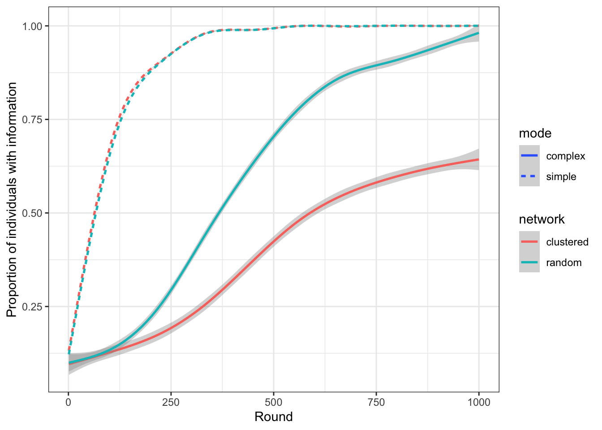
This figure tells us that, while there is no apparent difference in the spread of information in clustered and random networks for simple contagion, we find that information spreads faster in clustered networks if the transmission is akin to complex contagion. The reason for this is that in clustered networks an individual’s neighbours are more likely to also be connected. This increases the likelihood that the neighbours also share the same information, and, in turn, increases the individual’s exposure to this information.
11 Social network structure
As we have seen in the previous chapter, sometimes more detailed modelling can lead to different results (compared to the abstract case) ……. Henrich’s model, for example, has shown that a populations ability to maintain and accumulate cultural traits depends on its size, whereby larger populations are more likely to retain and improve cultural traits than smaller ones. We used this model as an example that population-level characteristics (here, demography) play a role in cultural dynamics. Given that individuals acquire information from other individuals through social learning, we might also suspect that individual-level phenomena are important, too. Commonly, individual interactions are represented as networks, whereby nodes (also referred to as vertex, pl. vertices) represent individuals, and ties (also referred to as edges) between any two nodes indicate a relationship (e.g. friendship or kinship, or willingness to cooperate, etc.). Note, as with the term individual-based models, the individual can be a person but it can also represent a country, an institution, or any other kind of actor.
In this chapter, we will cover the basics of social networks, how to create, analyse, and use them. Finally, we will use all of that to find an answer to the question: how do individual-level interaction patterns affect population-level cultural dynamics?
11.1 The Basics
Let us start with a small group of colleagues who see each other on a regular base in the office, some are friends, and some are not (sometimes the friendships might not even be reciprocal). For this example, we use gossip as socially transmitted information. Say, we want to better understand how gossip is spreading through this group. At the simplest level, we might assume that: any two colleagues will exchange gossip whenever they meet. This would reduce the group of colleagues to a well-mixed population, where information can flow freely. However, assume that gossip is only transmitted if two friends interact. Now we have a situation, where information flow is constrained by the underlying friendship network. To explore, how information can spread in that friendship network, we first need to find a way to represent it in R. One way to represent networks is an adjacency matrix. It is a square matrix where all individuals of a population are represented as columns and rows.
The matrix above is an example of such an adjacency matrix. Shown are the relationships between three individuals (A, B, and C). When we look at the first row, we see that A has no interaction with itself (indicated by the zero), but interacts both with B and C (indicated by the ones). From the next row, we see that B is only interacting with C, and the last row tells us that C interacting both with A and with B. This is an example for an asymmetric adjacency matrix because not all interactions are reciprocal (A is interacting with B but B is not interacting with A). We can test this by comparing the upper triangle of the matrix with the lower triangle of the matrix:
We can make this matrix symmetric by replacing the lower matrix triangle with the upper one (this requires us to first transpose the triangle using the
t()function):Now let us turn back to our group of co-workers, and let us create a random friendship network. We start with an empty adjacency matrix, add friendships to the upper triangle and then copy the mirror image to the lower triangle (this is assuming that friendships are reciprocal):
Now, we randomly assign friendships to one of the triangles. We sample from zeros (no friends) and ones (friends) with a probability that indicates how many friendships there are in the network (
friendschipRatio):This is all we need to describe the interactions and the flow of information within this group. And while we could already use other tools in R to analyse it, we should first try to visualise this network to get a better intuition of what this group looks like. The
igraphpackage provides many incredibly useful functions and tools to create, work with, and analyse networks. We will rely on many of its functions in this chapter.11.2 Plotting networks
Given that we already have an adjacency matrix, we can create a network using the
graph_from_adjacency_matrix()function.When we return the
netobject, we receive a lot of information about our network, for example, that it is there are 10 vertices and 32 edges (for more information be sure to have a look at this short igraph introduction). However, we did not receive an actual network figure. For this, we can use the R’s generic plot function:This is the most basic network plot where each node (with the numbers 1 to 10) and their connections (edges/ties) are plotted such that nodes that receive more connections are more central and those that rec#eive less are more peripheral. Note, every time you plot the network, it will have a slightly different layout. If you would like to preserve the node positions you can uncomment the
set.seed()function in the code chunk above.There are many ways to change the looks of network plots. The igraph manual is an ideal starting point to learn more about it. For example, we could plot nodes based on specific layout functions:
Or we can directly change the size, and colour of nodes:
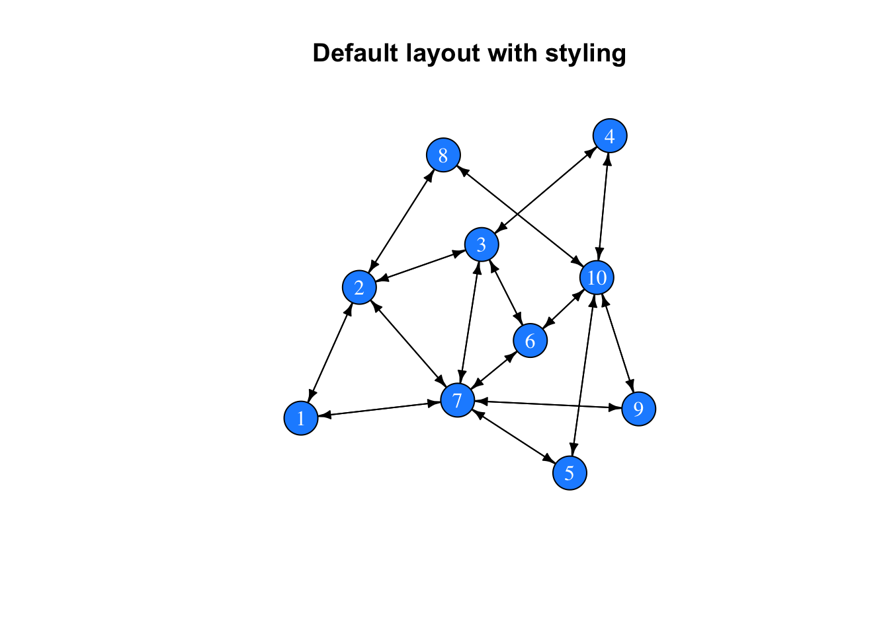
In the previous example, we have changed the colour of the nodes’ background and text, and their overall size (attributes starting with
vertex.). We have also changed the colour of the edges, their width, and the size of the tips (attributes starting withedge.).Let’s say, we know the age of each individual and we would like to visualise age as different colours of the nodes. For that, we should first store the colour information for each vertex (using the
V()function) and then change the vertex colour in the plot function:The
netobject now has two attributes (one is called age, with numeric values, and one is called colour, with character values). We can now plot this graph: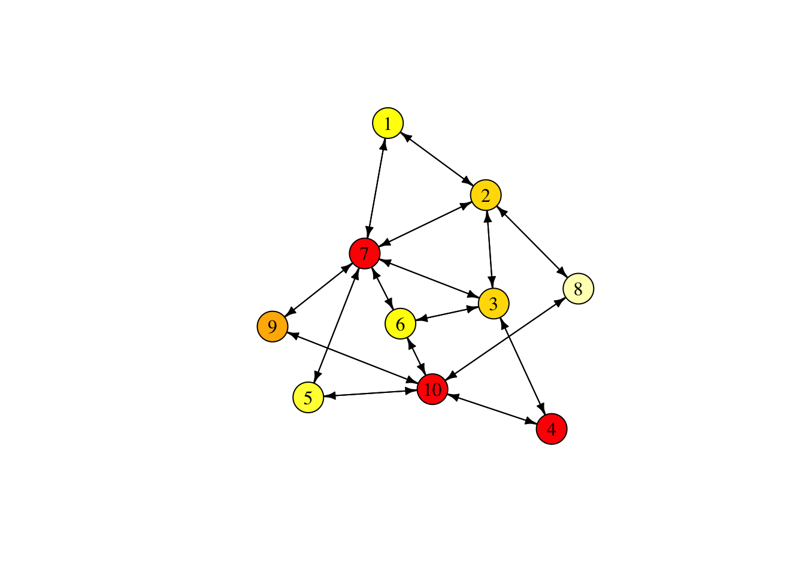
It can be useful to remove the labels from the nodes and reduce the node size, especially when the networks become large. Also, given that we have a symmetric network (all relationships are reciprocal), we can get rid of the arrow tips. We do this by telling igraph that the network is undirected.
One final styling example. So far, we have the edges indicate the existence of friendship relationships, which is a binary quality. However, we can also imagine friendship as a continuous variable (from strong = 1 to none = 0). Using the edge function
E(), we can add attributes to the edges in the network. We can use those to alter the width of edges depending on their relationship strength. To do that, we will first change the adjacency matrix (from binary to continuous values) and then plot the new network.Note, igraph automatically added an attribute called
weight. Now, let’s plot this network with the edge width representing their weight:You can now observe strong and weak relationships between individuals, their location relative to each other, and how they cluster. In the next section, we will try to quantify these observations.
11.3 Analyse social networks
There is a variety of measures to describe the structure of our graph (another term for network). We can generally differentiate between properties of the network and properties of the vertices:
11.3.1 Network properties
We can retrieve the most basic information about our network using:
If our networks have attributes stored (for the vertices or edges), we can retrieve them with the following two functions:
With
vcount()andecount(), we can return the number of vertices (10) and edges (16) in our graph.Let us now look at a variety of measures that we can calculate to characterise our network.
Diameter is a measure for the longest (geodesic) path, i.e. the largest number of steps that are necessary to reach two vertices in a network (using
farthest_vertices()we can return the ID of the two vertices).Average path length is the average number of steps that need to be traversed between any two vertices (aka as dyad). We can also use the
distance()function to return a distance matrix similar to the adjacency matrix.Edge density is the proportion of edges present in the graph relative to the number of possible edges (i.e. in a fully connected network with the same number of nodes).
Reciprocity (relevant for directed graphs only) calculates the proportion of mutual edges. As we have a directed graph, this value is one.
Clustering coefficient (aka transitivity, or cliquishness) is the probability that the two neighbours of a vertex are neighbours of each other. This is also called a triangle, and often the image of ‘my friends are friends with each other’ is used.
11.3.2 Vertex properties
Additional to these high-level measures, we can use a series of node-level measures to describe connectivity in more detail:
Degree centrality refers to the number of (incoming/outgoing/both) edges of a vertex. We can use the
degree()function to determine the degree centrality of each node:Strength is similar to degree centrality but relevant for weighted networks. It is the sum of all adjacent edge weights (a node might have many edges but with very low weights and so with high degree centrality but low strength). In our case (unweighted network),
degree()andstrength()produce the same result:Closeness centrality represents the number of steps it takes from a given vertex to any other vertex in the network. It is a measure for how long information on average takes to arrive at this node.
Note that the values are $<$1. This is because
igraphdefines closeness centrality as ‘the inverse of the average length of the shortest paths to/from all the other vertices in the graph.’Betweenness centrality is the number of shortest paths between nodes that pass through a particular node. It is often seen as a measure for a node’s gatekeeping or brokerage potential:
Eigenvector centrality is the eigenvector of the adjacency matrix. Vertices with a high eigenvector centrality are connected to many individuals who are connected to many individuals, and so on (see also page rank,
page_rank(), and authority,authority_score(), score functions).11.4 Using social networks to model information transmission
Now that we know how to generate, plot, and analyse networks: how can we use them in the context of information sharing. Or to come back to our initial example, the spread of gossip? Let us start with a very simple model: we initiate the simulation be endowing one individual with a piece of information (or gossip). We then simulate how many time steps it will take until the information has spread through the entire network.
11.4.1 Gossip transmission on networked populations
This is already sufficient to simulate the spread of gossip on a network. In the next step, let us loop over these instructions and record the number of time steps it takes until everyone received the gossip. But first, we should write a different
sample()function, as the generic function misbehaves with samples of length equal to one. We will use the following:Now we can use this simpler version of the sampling function (which is directly tailored to our needs), replace it in the code above, and add a
forloop:Let us adapt the code so that we can run it repeatedly, to get a better feeling for the average amount of time it takes for the information to spread.
With this function of our model, we can easily re-run the simulation several times and receive the time trajectories for each simulation:
We can see that the initial spread is very fast and then tapers off. At the beginning there are a lot of individuals who do not have the gossip and transmission will be successful. However, the more individuals with the gossip there are, the less likely it is to find someone who does not yet have the gossip. How does this result compare to simulations with a fully connected network (i.e. where every individual is equally likely to interact with any other individual)?
To make the creation of networks easier, let us write down a function to generate networks as we have done before:
Now we can create a fully connected network, run the gossip model on it, and plot the results:
This plot shows that the fully connected network reaches saturation faster than the colleague network. The difference becomes even more obvious when we re-run this simulation with larger networks:
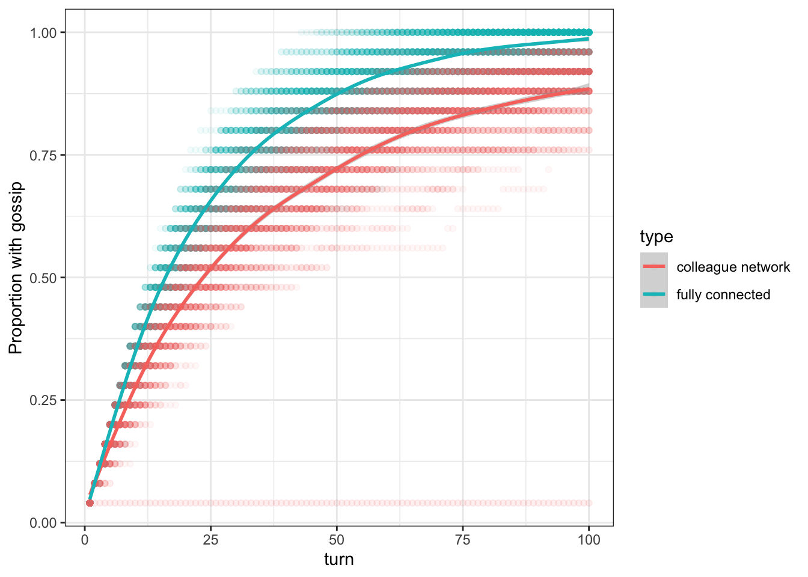
11.4.2 How does network structure affect information transmission?
While the previous example has shown us the difference in the transmission speed of information in a structured versus an unstructured population (i.e. the fully connected network which is equivalent to a well-mixed population), we still do not know how network characteristics affect the transmission of information. To get a better understanding of it, we will simulate the transmission of information in networks of different sizes and connectivity. Here, we will simulate Small-World networks (also known as Watts-Strogatz graphs). These are networks that are characterised by high clustering and short average path length.
For this type of analysis we do not need to record each time step, instead, we can let our function return the time step at which, e.g. 75% of the population have heard the gossip:
Now, let us run these functions for different group sizes and different connectivites, and let us repeat these simulations several times to get a better estimate:
To plot the average time of our repeated simulations, we need to first calculate this average:
Let us have a look at both the average network degree and the average path length of the networks:
Note, the average network degree is constant at \(k =\) 4. This is due to the way Small World networks are created. We start with a regular lattice network and then randomly select an edge and change the vertex on one end (e.g. from A–B to A–C). Thus, while some individuals might now have fewer (or even zero) edges and others might have more, the average number of edges and so the average degree remains fixed an independent of the number of rewired edges.
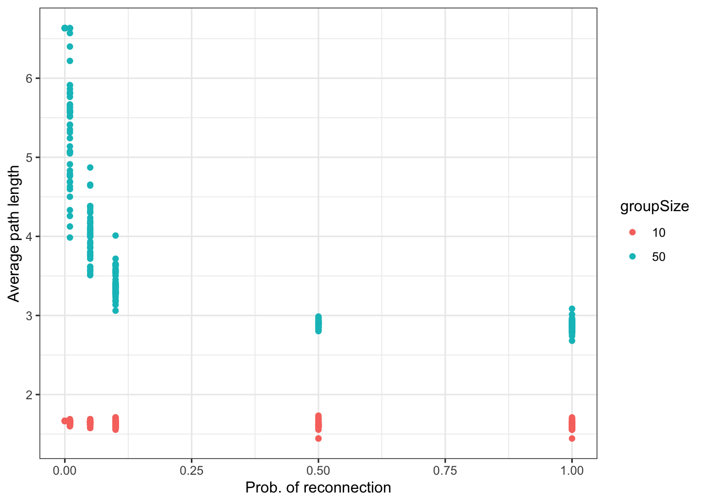
This, however, is not true for the path length. Instead, we find that larger networks (with otherwise the same network parameters) have longer average path lengths (i.e. it takes on average more steps to get from one to another individual). Also, as we increase the probability to reconnect edges average path length goes down. This is because random connections might connect distant sections of the network and so drastically lower the number of steps required to get from one individual to another.
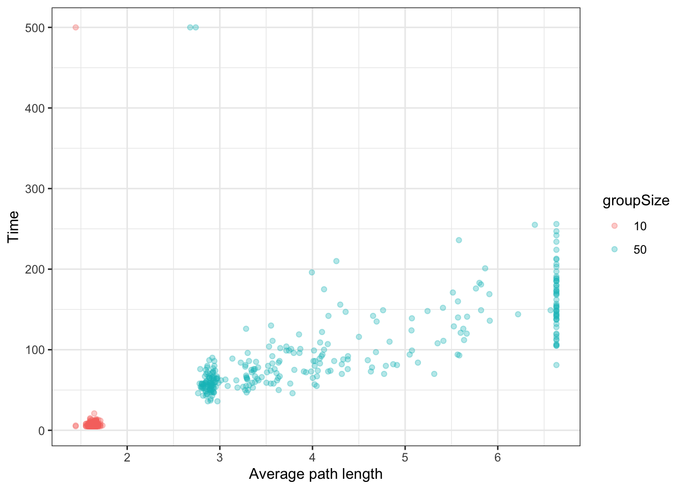
From this graph, we can see that the spread of information decreases as networks become larger and as average path length increases.
11.4.3 Complex versus simple contagion
The spread of information is not only affected by the network shape but also by the manner of information transmission. That is, often information is not simply transmitted from one individual to another in a simple contagion like manner but instead requires increased social facilitation. This can both be repeated exposure to the information or a certain proportion of social partners who possess this information. In other words, often we are more likely to acquire behaviours from others if this behaviour is more frequent in our neighbourhood. This kind of transmission is called complex contagion (see e.g. Centola (2010)). But how does simple and complex contagion affect the spread of information? To model this, we can write a small model where we randomly select individuals and check whether they acquire information from their social contacts based on a threshold value, i.e. the number of contacts required to acquire information.
Let us start with a model of simple contagoin (requires only one social contact that possesses a new beahviour or information to acquire it):
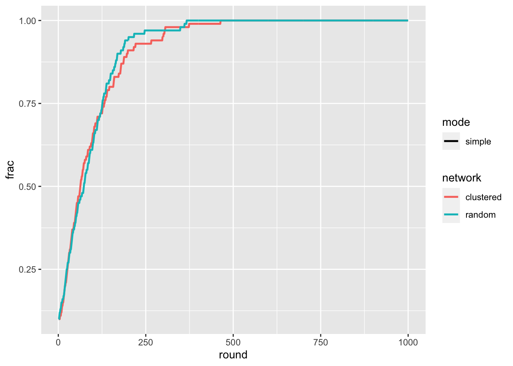
For the simple contagion case we find very little differnce between the two network types. Let us now add the complex contagon case to the simulation:
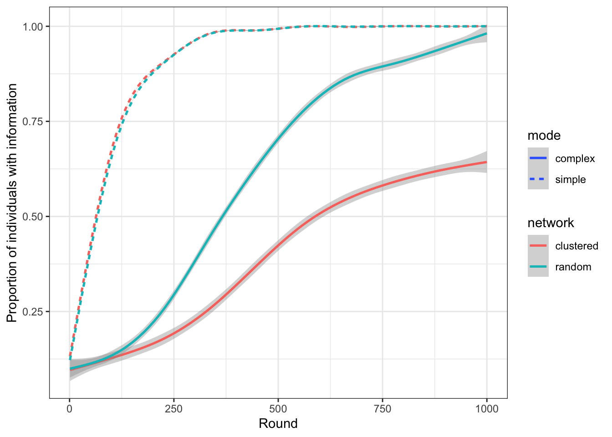
This figure tells us that, while there is no apparent difference in the spread of information in clustered and random networks for simple contagion, we find that information spreads faster in clustered networks if the transmission is akin to complex contagion. The reason for this is that in clustered networks an individual’s neighbours are more likely to also be connected. This increases the likelihood that the neighbours also share the same information, and, in turn, increases the individual’s exposure to this information.